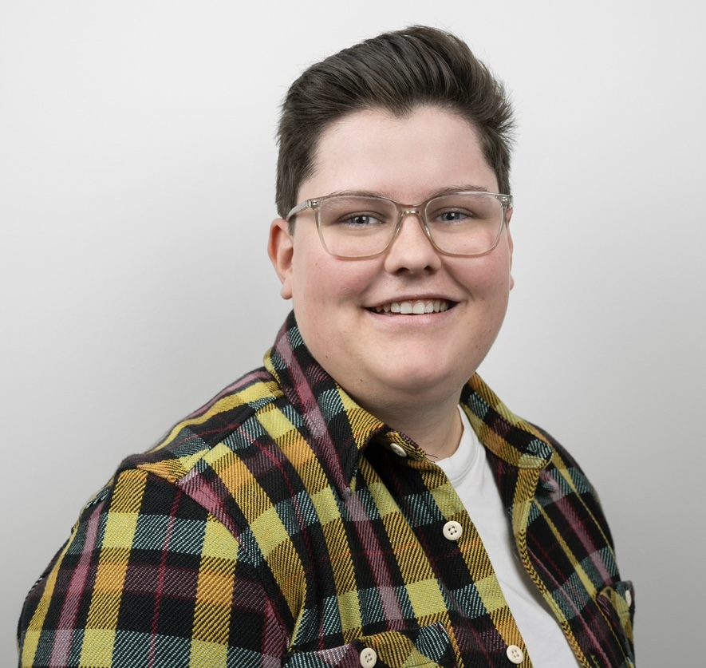

Open to ambitious product and engineering environments
Laura Puschitz
Electronics technician with a passion for technology, IT and innovation.
NPI Engineer and ESG Data Collection Coordinator with hands-on experience in electronics, manufacturing, prototype launches, test engineering and workflow automation
10+
years across electronics, manufacturing, and industrial workflows
2
parallel roles spanning NPI execution and ESG data coordination
DE / EN
professional communication in German and English
